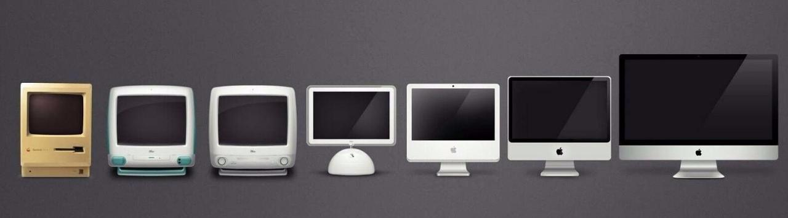

Computer History/Inventions
The first ever computer named "ENIAC" was invented by J. Presper Eckert and John Mauchly at 
the University of Pennsylvania and began construction in 1943,
it was not completed until 1946. It occupied about 1,800 square feet
and weighed around 5 tons.
Over the past 70 years computers have gone through many drastic changes.
While computers only started gaining popularity
in the 1990's they were still big and heavy, nowadays everyone has a tiny computer
in their pocket which usually weighs
less than a pound.